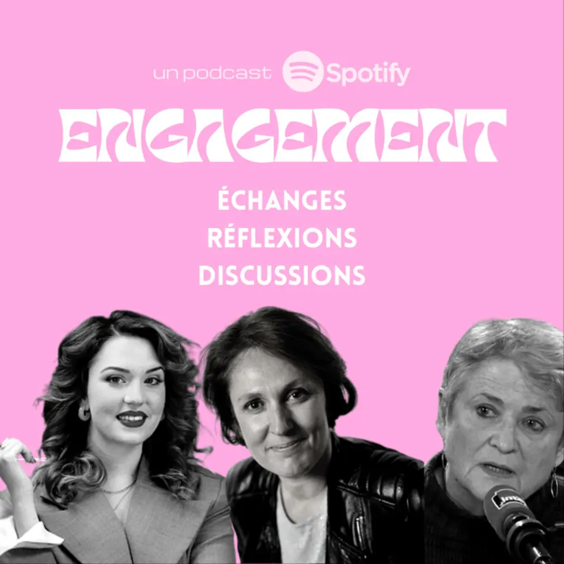

Supplément audio · podcastPrésenté par Marco Gicquel
Un podcast Marco Investigation, avec Spotify
Engagement
Échanges, réflexions, discussions. Un podcast pour échanger, réfléchir et amener à la réflexion autour de l’engagement : des personnalités plus ou moins connues, des étudiantes, des fondatrices, des tables rondes.
Écouter la bande-annonce
Écouter sur Spotify
Le son démarre seulement quand vous cliquez.

Les épisodesExtraits de 30 s · son au clic
Six conversations sur l’engagement
Les extraits démarrent à un moment choisi de chaque épisode. Moments à choisir par Marco
Les voixInvitées et invités
Ils et elles ont pris le micro
- Isabelle HuppertConférence enregistrée aux 24h de Libé, Cité de la Musique, Paris.
- MaelleÉtudiante, elle a alerté sur la précarité étudiante dans une vidéo TikTok.
- FannyFondatrice des Nouvelles Oratrices, pour aider les femmes à prendre la parole en public.
- Table ronde Nos FutursFestival organisé par Les Champs Libres en partenariat avec Le Monde. Noms des intervenants à compléter
Proposer un sujetCourrier des auditeurs
Une voix à faire entendre ?
Questions, remarques, idées d’invité·es : écrivez à l’adresse indiquée dans le podcast.
- Adresse du podcastvideos@
marcoinvestigation.org